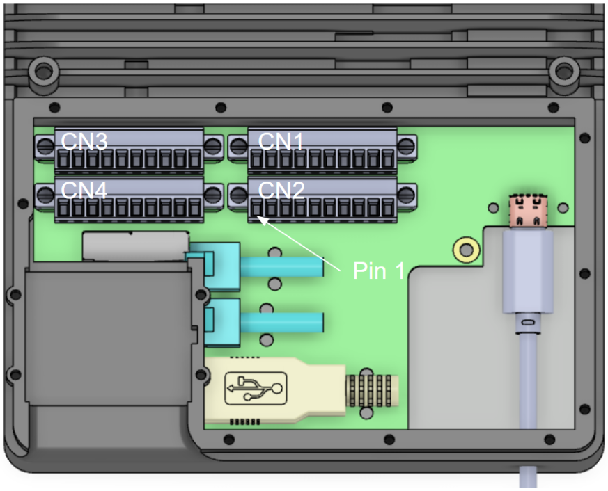

CORE I/O Documentation
This section describes how to develop and deploy applications on the CORE I/O and monitor its status.
File System and Release System
One of the significant differences between the CORE I/O and original Spot CORE is that the root filesystem on the CORE I/O is read-only. The read-only root filesystem of the CORE I/O allows the system to be more secure and reliable. It also enables the system to perform updates more easily and roll back to previous releases when updates fail. While the root filesystem is read-only, the CORE I/O also has read-write partitions for storage of user data and applications. The recommended way to run application on the CORE I/O is using Docker or Spot Extensions (which uses Docker). All Docker files, including volumes, are stored in a read-write partition.
The root filesystem does have an optional temporary overlay that allows for writing and modifying files,
but any changes made to the root filesystem are erased on the next boot.
To enable this, run sudo touch /persist/.enable_overlayroot and reboot the system.
To disable this overlay, run the command sudo rm /persist/.enable_overlayroot and reboot the system.
High level partition scheme:
The CORE I/O has the following partitions:
Credential (
/cred) partition (100MB): contains credential and serial related information, read-onlyPersistent (
/persist) (5GB): contains other data that may be relevant across reboots and updates, read-writeRoot (
/) partition (4GB): contains most of the files and structures needed, read-onlyData (
/data) partition (400GB): contains persistent user data, including docker images and containers, read-write
System Configuration
Admin Web Server Authentication
When attached to a robot, the CORE I/O web server will authenticate against the robot it’s attached to with the provided username and password. This will typically be the password printed in the battery compartment of the robot, but can be any other username/password combination that is valid for the robot, such as a user that has been added through the robot’s web interface.
To disable authentication for the web server (needed if the payload is not attached to a robot), SSH to the CORE I/O (enter the password provided with the payload when prompted) and create the “skipAuth” file, then restart the web server:
ssh -o IdentitiesOnly=yes -p 20022 spot@<robot-ip>
sudo touch /opt/bd-docker-containers/skipAuth
sudo systemctl restart bd-docker-containers.service
Disabling authentication will not persist across boots.
How to connect via SSH
If the payload is on a benchtop (e.g. not on a robot), connect the client device to one of the ethernet ports on the payload and set the connected device’s IP address to be on the same subnet (192.168.50.0/24), then run:
ssh spot@192.168.50.5
If the payload is on a robot, connect the client device to the robot’s network and run:
ssh -p 20022 spot@<robot-ip>
How to connect via local terminal with monitor and keyboard
We recommend connecting to the payload through SSH, but if necessary, the payload provides a USB-C port and two USB-A ports for connecting a monitor and keyboard. To connect a monitor, use a USB-C to HDMI or USB-C to Displayport adapter. Desktop mode allows CORE I/O to be used without attaching to Spot. To use the payload in desktop mode, connect a 48V power adapter (not included in packaging). When operating the payload in desktop mode, the only available interface is a terminal. Graphical elements have been removed from the software to optimize for other use-cases.
Network and SSH Configuration
Network configuration on the CORE I/O is done using NetworkManager.
By default, the payload has in IPv4 address of 192.168.50.5/24 on its ethernet interface, which connects to an onboard switch that also connects to the robot via the payload port.
The IP address can be changed from the command line using the nmcli tool (https://developer-old.gnome.org/NetworkManager/stable/nmcli.html).
If network settings are changed via a different interface (e.g. ip or ifconfig), the settings will not persist across reboots.
To connect to a wifi network with a connected USB Wifi dongle:
sudo nmcli r wifi on
sudo nmcli dev wifi list
sudo nmcli --ask dev wifi connect <SSID>
By default, password-based SSH is allowed. To disable this and only allow key-based SSH, edit the SSHD config file located in /persist/etc/ssh/sshd_config.
After password-based SSH has been disabled, copy the SSH key provided with the payload to your client system and connect to the payload using:
ssh -i </path/to/ssh.key> -p 20022 spot@<robot-ip>
Default Services
By default, the CORE I/O runs a set of software provided by Boston Dynamics. This includes the following:
Velodyne LIDAR point cloud processing service (
/lib/systemd/system/velodyne_service.service)Payload registration (part of
/lib/systemd/system/bd-docker-containers.service)Administration web server (part of
/lib/systemd/system/bd-docker-containers.service)Modem management and stat collection (part of
/lib/systemd/system/bd-docker-containers.service)
If these are not needed, they can be stopped by the user until the next boot by running sudo systemctl stop velodyne_service or sudo systemctl stop bd-docker-containers.service.
Passwords and Groups
As of the 3.2.1 release of CORE I/O software, the password and groups on the payload can be modified by the user.
To change the password for the spot user, log in to the payload as the spot user and run passwd.
To add a new sudo user, run sudo useradd -m -G sudo <username> and then passwd <username>.
To add the spot user to an additional group, run sudo usermod -a -G <group> spot.
Developing on the CORE I/O
Development Environment
Due to the read-only filesystem, direct development on the CORE I/O is not recommended.
Installing dependencies using apt and pip will not work correctly and even if they do, that environment is removed on the next boot.
Instead, we recommend developing on a dedicated development machine and install the end product application to the CORE I/O as Docker images configured in an Extension. See Running Custom Applications with Spot for more information.
If development needs to be done on the payload itself, we recommend developing in an environment created with a Docker container.
All dependencies needed for development can be pre-installed in a docker image (or installed after the container is running).
Devices, files, and networking can also be supplied to a container by using the --device, --volume, and -p flags for docker run.
For more information, see Docker run reference.
As an example, the follow command can be used to create a development Docker container (the payload will need internet access, or else the arm64v8/python:3.8-slim image needs to imported first):
sudo docker run --name dev_env -d --entrypoint /bin/bash -v /data:/data arm64v8/python:3.8-slim
This creates a detached Docker container with the /data directory mounted. To connect to it, run:
sudo docker exec -it dev_env /bin/bash
You now have an environment where you can install additional dependencies using apt and pip and can execute Python code.
An example development image is also available as a Spot Extension and can be downloaded here. After uploading the extension (playground_extension.spx) to the CORE I/O, SSH to the payload, then connect to the running container with the following command:
sudo docker exec -it playground_extension-coreio_playground-1 /bin/bash
This “playground” container is based off the Linux for Tegra (L4T) base image and enables use of the GPU. It does not contain anything else, like the SDK, but those can be added if necessary by changing the Docker image included in the extension.
GPIO and PWM
GPIO stands for general purpose input/output. The CORE I/O comes with 3 pins a developer can utilize for these general purposes. They can be setup in software as a signal output of 3.3v, a logic level input reading pin (note there are not internal pull-up resistors), or a pwm (pulse-width modulation) output signal. The CORE I/O also provides pins that provide power out at 5V, 12V, and 24V. There are also 2 pins providing i2c communication SDA (data) and SCL (clock).
CORE I/O Diagram:

Terminal Block Schematics:

In table form:
| Pin Number | Connector (CN)1 | CN2 | CN3 | CN4 |
|---|---|---|---|---|
| 1 | Motor Loop Back | GPIO pin 1 | 48v unreg | 48v unreg |
| 2 | Motor Loop Back | GPIO pin 2 | 24v output | 24v output |
| 3 | Extra Loop Back B | GPIO pin 3 | 12v output* | 12v output* |
| 4 | Extra Loop Back B | GND | 12v output* | 12v output* |
| 5 | Payload Loop Back | i2c serial SDA | 5v output | 5v output |
| 6 | Payload Loop Back | i2c serial SCL | 5v output | 5v output |
| 7 | Extra Loop Back A | PPS pulse | GND | GND |
| 8 | Extra Loop Back A | GND | GND | GND |
| 9 | GND | GND | GND | GND |
| 10 | GND | GND | GND | GND |
| 11 | GND | GND |
All loop backs must ensure continuity to like-named loop back connections i.e. jumpered.
The easiest way to control the voltage output pins in CN3 and CN4 is through the GPIO page in the web server. At this time, PWM control has not yet been built into the web server.
* Turning off GPIO pins while the payload is in operation may also adversely affect functionality. For example, turning off the 12V pin will cut power to an attached lidar and will inhibit Autowalk from working. The service serving LIDAR data to the robot also automatically turns on the 12V pin. If the 12V pin needs to be turned off, the lidar service must be disabled.
The following are the electrical specifications for the GPIO ports:
3.3V Nominal I/O, 100 Ohm Series output impedance
Output: V_OH(min) = 2.2V, at V_CCO=3.0V & I_OH=-24mA
Abs Max: I_OL/I_OH = +-50mA
I_VCC*/GND = +-100mA
Scripts have also been provided as part of the base CORE I/O software that can be referenced when working with GPIO and PWM from another program:
Voltage outputs:
/usr/bin/gpioPowerUtil.sh(This provides a command line interface for toggling voltage outputs. See the contents of the script for usage)PWM Control:
/usr/bin/gpioPwmUtil.sh(This provides a command line interface for configuring PWM outputs. See the contents of the script for usage)
Note: All voltage output pins (CN3 and CN4) are turned on when the CORE I/O boots up. On/off settings set via the web server or helper script do not persist across reboots or updates. Turning off GPIO pins while the payload is in operation may also adversely affect functionality. For example, turning off the 12V pin will cut power to an attached lidar and will inhibit Autowalk from working. The service serving LIDAR data to the robot also automatically turns on the 12V pin. If the 12V pin needs to be turned off, the lidar service must be disabled.
Example of a Docker Compose file that provides voltage output control:
version: "3.5"
services:
gpio_container:
image: ubuntu:18.04
restart: unless-stopped
volumes:
- /dev:/dev
- /sys:/sys
devices:
- /dev/gpiochip0:/dev/gpiochip0
- /dev/gpiochip1:/dev/gpiochip1
- /dev/gpiochip2:/dev/gpiochip2
Working with other devices (e.g. USB devices, SD cards, etc.) is similar. The corresponding devices and volumes simply need to be mounted into the container.
Working with i2c
i2c is a serial communication protocol that can be used to daisy-chain many devices (provided they have different addresses) to a single bus. Communication happens across 2 pins SCL and SDA (clock and data) and chip power and ground are also required, 4 wires total for dozens of sensors and devices.
The CORE I/O CN2 connector has i2c in pins 5 (SDA) and 6 (SCL)
Once the device is connected to SDA, SCL, 3.3v, and GND it can be seen on the i2c bus #1 by using this shell command:
i2cdetect -y -r 1
Which returns:
0 1 2 3 4 5 6 7 8 9 a b c d e f
00: -- -- -- -- -- -- -- -- -- -- -- -- --
10: -- -- -- -- -- -- -- -- -- -- -- -- -- -- -- --
20: -- -- -- -- -- -- -- -- -- -- -- -- -- -- -- --
30: -- -- -- -- -- -- -- -- -- -- -- -- -- -- -- --
40: -- -- -- -- -- -- -- -- -- -- -- -- -- -- -- --
50: -- -- -- -- -- -- -- -- -- -- -- -- -- -- -- --
60: -- -- -- -- -- -- -- -- -- -- -- -- -- 6d -- --
70: -- -- -- -- -- -- -- –
The table shows there is a device on bus 1 at address 0x6D To read individual registers on the device, run the following command:
i2cget -y 1 0x6D 0x00
Working with the GPU
The CORE I/O has an NVIDIA Xavier NX, which has an NVIDIA Volta architecture GPU with 384 NVIDIA CUDA® cores. The GPU can be used for running ML models and examples for running ML models as Spot Extensions are provided as a part of the Spot SDK. The GPU can be used by multiple processes (and multiple Extensions), but performance may not be optimal.
Benchmarks: https://developer.nvidia.com/embedded/jetson-benchmarks
The GPU can be used as a part of a docker container or Spot Extension by using Nvidia’s L4T base docker image and running a container using the --gpus all flag.
An example using Docker Compose and Spot Extensions has also been provided as a part of the fire extinguisher detector:
version: "3.5"
services:
fire_ext_detector:
image: fire_ext_detector:l4t
network_mode: host
restart: unless-stopped
volumes:
# Mount payload credentials.
- /opt/payload_credentials/payload_guid_and_secret:/opt/payload_credentials/payload_guid_and_secret
# The command below is partial because the docker image is already configured with an entrypoint.
command: -d . 192.168.50.3 --payload-credentials-file /opt/payload_credentials/payload_guid_and_secret
deploy:
resources:
reservations:
devices:
- driver: nvidia
capabilities: [gpu]